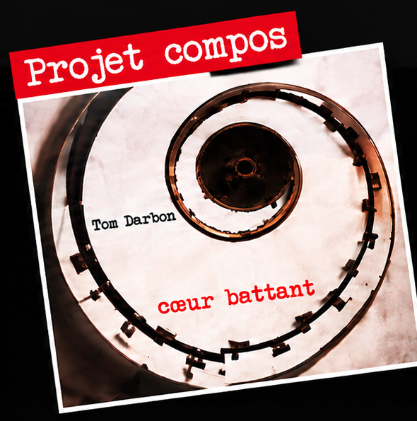
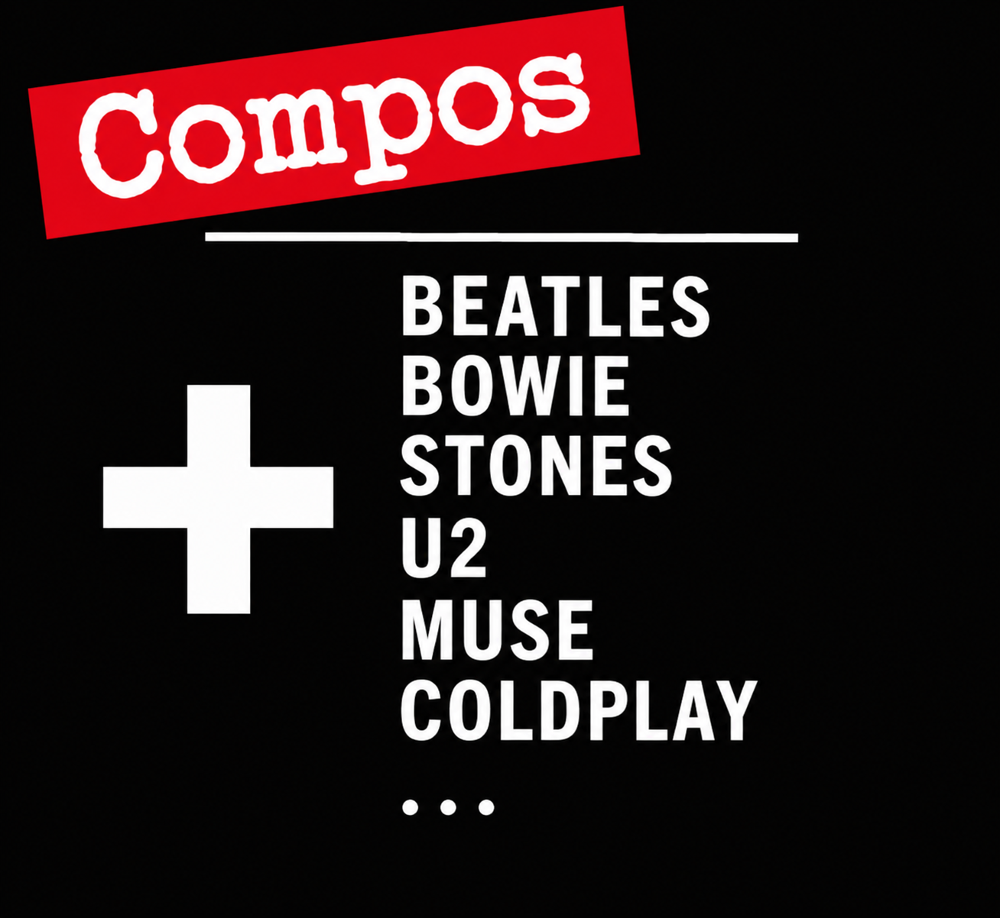

DATES À VENIR
Mini-concert au Barbarian's Pub — avant l'Effet Bœuf
🎸 Projet compos - Tournée « Cœur Battant », durée : 30 minutes — Entrée libre
📍 Le Barbarian’s Pub, Dijon (21) — 🕢 19h15 à 19h45

Concert au M'Beer
🎸 Concert pop-rock (compos + covers UK/US)
🕗 19h – 22h30 — Entrée libre
📍 Chevigny-Saint-Sauveur (21), zone commerciale

Concert à la MJC de Dole
🎸 Projet compos — tournée « Cœur Battant »
🕗 20h – 21h — Entrée libre
📍 9 rue Sombardier, 39100 Dole
Soirée-concerts avec Dollmen et CYCLOPE
🎸 Projet compos — tournée « Cœur Battant »
🎸 Salle des fêtes d'Authume
🕗 Ouv. des portes 20h15 — Entrée : 15 € (préventes 13 €)
📍 Authume (39)
Fête de la musique
🎸 Projet compos — tournée « Cœur Battant »
🕗 Horaire à définir — Entrée libre
🎸 Scène en extérieur en centre-ville
📍 Champagnole (39)
Fêtes de la Vigne
🎸 Concert pop-rock (compos + covers UK/US)
🎸 Clos des Flaveurs, en extérieur
📍 Givry (71) — 🕗 En soirée
DATES PASSÉES
| SAM. 26/09/2026 | Concert au Café Charles - Compos + covers UK/US | Dole (39) |
| SAM. 19/09/2026 | Sortie officielle de l'album en CD « Cœur Battant » - Show-Case à la FNAC de DOLE | Dole (39) |
| MAR. 1/09/2026 | Sortie sur YouTube du clip « Métamorphose », 1er single de « Cœur Battant » | YouTube |
| LUN. 31/08/2026 | Interview de Tom sur la radio Fréquence Plus ! (en écoute sur l'onglet Accueil & Vidéos) | Radio Fréquence Plus |
| SAM. 20/06/2026 | Concert au café LE PARISIEN - Compos + covers UK/US | Dole (39) |
| 10/12/2025 | Interview de Tom en simultané sur la radio Ici Bourgogne (103.7) et sur France 3 ! (visionnable sur l'onglet Accueil & Vidéos) | Dijon (21) |
| Mai 2025 | Sortie du single « Demain » | Plateformes |